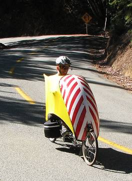

Week 2 Results: Kings Mountain
06 Oct 2007
|
2007 Low-Key Hillclimbs Week 2 Results: Kings Mountain 06 Oct 2007 |
|  |
| Bill Bushnell defines the new Low-Key hybrid-electric division (photo by Ron Brunner) |
Again, conditions were essentially ideal for the Low-Key Hillclimbs, as we climbed Kings Mountain Road in this second week of the 9-week 2007 series. We used the "small group" format this week, which worked out generally well, although there was some merging of groups along the 5.8-mile "promenade" to the start @ Kings and Greer.
On to results: Bill Bushnell was back, whose battery-assisted recumbent set the quickest mark at 19:24, contrasted with Tracy Colwell's 19:51 in 1996.
We had another super women's turnout. Last year's Mt Hamilton winner Anny Henry of CRC produced the top time of 27:09, an excellent time yet not quite as fast as Laura Stern's 26:10 from 1996. Second and third went to Margie Biddick and Mary Ellen Allen. Anny now leads the women's overall, which is after two weeks based on the best score from weeks 1-2.
In the men's category, nobody came close to Tracy's 1996 time, but it was Tim Clark of Red Dragon first in 21:15, followed by Mark Edwards and Clark Foy in second and third.
In the team competition, Bike Trip were tops for week 2, followed by San Jose Bike Club and Webcor/Alto Velo.
Spectator of the week: All were pleased to see Kevin Winterfield at the top of Kings today. Kevin moved to Connecticut this year, and has been seen ripping it up at the Gimbel's ride. Low-Key NorthEast Edition? Only time will tell.
Next up: Bohlman-On Orbit-Bohlman. Ouch.
Thanks to coordinator Patt Baenen, with help from Ron Brunner, Carol, Linda Chan, Simon Chan, Cara Coburn, John Gale, Janet Lafleur, and Kim Payne for making today's climb possible!median time = 19:24
pl # rider team category time mph fph score 1 244 Bill Bushnell TNT Hybrid 19:24 13.33 4763 100.00
median time = 27:06
pl # rider team category time mph fph score 1 210 Tim Clark Red Dragon 35+ 21:15 12.17 4348 127.49 2 328 Mark Edwards Bike Trip 45+ 21:46 11.88 4245 124.46 3 39 Clark Foy San Jose Bike Club 40+ 21:55 11.80 4216 123.61 4 224 Eric Balfus 2 22:04 11.72 4187 122.77 5 1 Dan Connelly TNT 3 22:22 11.56 4131 121.13 6 45 Rupert Brauch Webcor/Alto Velo 3 22:28 11.51 4113 120.59 7 315 Ken Gallardo Pen Velo/Kondra 30+ 22:48 11.34 4053 118.82 8 97 Greg McQuaid Western Wheelers 35+ 22:53 11.30 4038 118.39 9 213 Tom Gardin 35+ 22:54 11.29 4035 118.30 10 54 Justin Lucke Google Vegan 23:04 11.21 4006 117.45 11 282 Ammon Skidmore Roaring Mouse 30+ 23:12 11.15 3983 116.77 12 221 Jenson Lee Kahala La Grange 2 23:13 11.14 3980 116.69 13 142 Rich Hill LGBRC 40+ 23:18 11.10 3966 116.27 14 299 Andrew Nevitt San Jose Bike Club 40+ 23:38 10.94 3910 114.63 15 85 Chris Soukup San Jose Bike Club 35+ 24:03 10.75 3842 112.65 16 319 Joe Platin Bike Trip 45+ 24:18 10.64 3802 111.49 17 165 Allen Wulczynski San Jose Bike Club 45+ 24:25 10.59 3784 110.96 18 239 Joerg Heilig Google 35+ 24:26 10.58 3782 110.88 19 320 Eddie Broeder San Jose Bike Club Junior 15 24:33 10.53 3764 110.35 20 124 Jeff Farnsworth San Jose Bike Club 50+ 24:36 10.51 3756 110.13 21 277 DJ Novotney 30+ 24:40 10.48 3746 109.83 22 296 Matt Boxemeier San Jose Bike Club 35+ 24:41 10.48 3743 109.76 23 278 Chris Heisterkamp Google Male 24:47 10.43 3728 109.31 24 116 Shance Ordell Western Wheelers 35+ 24:55 10.38 3708 108.73 24 323 Scott Martin Bike Trip 50+ 24:55 10.38 3708 108.73 26 267 Crist Clark Webcor/Alto Velo 35+ 25:26 10.17 3633 106.52 26 4 Fred E. Stamm Pen Velo/Kondra 55+ 25:26 10.17 3633 106.52 28 250 Ian Sowden 25:38 10.09 3605 105.69 29 264 Luke Burton LGBRC 5 25:45 10.04 3588 105.21 30 122 Michael Gonia Republic of Anaerobia 40+ 25:46 10.04 3586 105.14 31 265 Steven Woo LGBRC 4 25:59 9.95 3556 104.27 32 271 John Toor 45+ 26:27 9.78 3493 102.43 33 303 Tom Workman STVC 40+ 26:39 9.70 3467 101.66 34 6 Greg Dougald AV: Old Guys Finish 45+ 26:44 9.67 3456 101.34 35 307 Christian Paquet Doogie 50+ 26:45 9.67 3454 101.28 36 238 Michael Kim 45+ 26:57 9.60 3429 100.53 37 233 Rand Hill Apple 35+ 27:05 9.55 3412 100.03 38 276 Genti Cuni Climbing Turtles 27:06 9.54 3410 99.97 38 204 Scott Khirck Wild Things Junior 27:06 9.54 3410 99.97 40 283 Dan Talayco Two Wheel Tango 40+ 27:08 9.53 3405 99.85 40 253 Chris Harrison La Dolce Velo Junior 27:08 9.53 3405 99.85 42 259 Joshua Hadley Republic of Anaerobia 27:19 9.47 3383 99.18 43 273 Calvin Do Skinny slow guys 35+ 27:24 9.44 3372 98.87 44 316 Gary Broder San Jose Bike Club 50+ 27:25 9.43 3370 98.81 45 229 Michael Czepiel Apple 20-24 27:30 9.40 3360 98.52 46 236 Paul Melville Doogie 55+ 27:39 9.35 3342 97.98 47 232 Matt Rodnick Recreational 27:45 9.32 3330 97.63 48 251 Paul Forti 30+ 27:52 9.28 3316 97.22 49 212 Pete Jollymour 6 27:53 9.27 3314 97.16 50 287 Rafael Ornes Valley Presbyterian 45+ 27:57 9.25 3306 96.93 51 166 Todd Manley San Jose Bike Club 6'9" 28:05 9.21 3290 96.47 52 34 Stephen Fong Blubber Busters 5 28:20 9.13 3261 95.62 53 149 Steve Sprang Apple 30+ 28:41 9.02 3221 94.45 54 178 John Mitchell Western Wheelers 50+ 28:49 8.97 3206 94.01 55 219 Sean Broeder Silicon Valley Triathlon Club 35+ 28:55 8.94 3195 93.69 56 77 Jorge Chang Blubber Busters Infinity 29:13 8.85 3163 92.73 57 308 John Hosteler San Jose Bike Club 45+ 29:15 8.84 3159 92.62 58 291 Jay Kilby LGBRC 40+ 29:38 8.73 3118 91.42 59 225 Bogdan Florea 35+ 29:43 8.70 3109 91.17 60 64 Keith Devlin Western Wheelers 60+ 29:45 8.69 3106 91.06 61 288 David Cook Balboa Slow 29:56 8.64 3087 90.51 62 70 Bob Parker AV: Old Guys Finish 50+ 30:17 8.54 3051 89.46T 62 216 Guy Coté 35+ 30:17 8.54 3051 89.46 64 272 Martin Hampton Pen Velo/Kondra 30:55 8.36 2989 87.63 65 300 Wade Bastien 35+ 31:13 8.28 2960 86.79 65 228 Teodor Doru Cuturela 30+ 31:13 8.28 2960 86.79 67 177 Dan Stober Western Wheelers 55+ 31:20 8.25 2949 86.46 68 266 Paul Schreiber Apple Slow 32:08 8.05 2876 84.31 69 49 Adam Tow Blubber Busters Infinity 32:18 8.01 2861 83.88 70 94 Todd Benjamin Apple 40+ 32:29 7.96 2845 83.40 71 15 Rich Brunner Cruzie 39ish 33:40 7.68 2745 80.47 72 231 Murali Krishnan Commuter 35+ 33:49 7.65 2732 80.11 73 312 Jonathan Racine San Jose Bike Club 35+ 34:43 7.45 2662 78.04 74 311 Derrick Hemingway San Jose Bike Club 40+ 34:44 7.45 2660 78.00 75 254 Richard Allen Webcor/Alto Velo 55+ 38:29 6.72 2401 70.40 T : tandem score
median time = 36:40
pl # rider team category time mph fph score 1 154 Anny Henry CRC 3 27:09 9.52 3403 135.08 2 332 Margie Biddick Bike Trip 4 29:23 8.80 3145 124.82 3 260 Mary Ellen Allen Webcor/Alto Velo 55+ 32:42 7.91 2826 112.16 4 95 Kelly Kasik Apple 34:14 7.55 2699 107.13 5 292 Christie Craig Slow 36:15 7.13 2549 101.17 6 279 Nuria Bertran Climbing Turtles Beginner 37:06 6.97 2491 98.85 7 71 Marie Borselle Velogirls 40+ 37:40 6.87 2453 97.37 8 324 Ileana Parker Webcor/Alto Velo Tandem 30:17 8.54 3051 89.46T 9 111 Pat Parseghian Google 50+ 41:57 6.16 2203 87.43 10 27 Christine Holmes Librarian 40+ 43:29 5.95 2125 84.34 11 246 Amy Tam Velogirls 44:12 5.85 2090 82.98 T : tandem score
pl team score scoring 1 Bike Trip 360.77 (Margie Biddick, Mark Edwards, Joe Platin) 2 San Jose Bike Club 350.89 (Clark Foy, Andrew Nevitt, Chris Soukup) 3 Webcor/Alto Velo 339.26 (Rupert Brauch, Mary Ellen Allen, Crist Clark) 4 Google 337.64 (Justin Lucke, Joerg Heilig, Chris Heisterkamp) 5 LGBRC 325.75 (Rich Hill, Luke Burton, Steven Woo) 6 Western Wheelers 321.13 (Greg McQuaid, Shance Ordell, John Mitchell) 7 Pen Velo/Kondra 312.97 (Ken Gallardo, Fred E. Stamm, Martin Hampton) 8 Apple 305.68 (Kelly Kasik, Rand Hill, Michael Czepiel) 9 Blubber Busters 272.22 (Stephen Fong, Jorge Chang, Adam Tow) 10 TNT 221.13 (Dan Connelly, Bill Bushnell) 11 Republic of Anaerobia 204.32 (Michael Gonia, Joshua Hadley) 12 Doogie 199.26 (Christian Paquet, Paul Melville) 13 Climbing Turtles 198.82 (Genti Cuni, Nuria Bertran) 14 AV: Old Guys Finish 190.80 (Greg Dougald, Bob Parker) 15 Velogirls 180.34 (Marie Borselle, Amy Tam) 16 CRC 135.08 (Anny Henry) 17 Red Dragon 127.49 (Tim Clark) 18 Roaring Mouse 116.77 (Ammon Skidmore) 19 Kahala La Grange 116.69 (Jenson Lee) 20 STVC 101.66 (Tom Workman) 21 Wild Things 99.97 (Scott Khirck) 22 La Dolce Velo 99.85 (Chris Harrison) 22 Two Wheel Tango 99.85 (Dan Talayco) 24 Skinny slow guys 98.87 (Calvin Do) 25 Valley Presbyterian 96.93 (Rafael Ornes) 26 Silicon Valley Triathlon Club 93.69 (Sean Broeder) 27 Balboa 90.51 (David Cook) 28 Librarian 84.34 (Christine Holmes) 29 Cruzie 80.47 (Rich Brunner) 30 Commuter 80.11 (Murali Krishnan)
{kind=link}